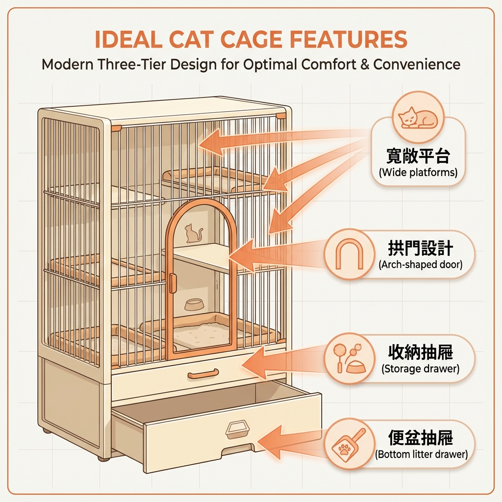

大空間貓籠選購指南｜何時需要、怎麼挑
貓籠不適合長期飼養，也不能取代貓平日的活動空間。 新貓到家先準備安靜房間；生病或術後是否要限制活動，先問主治獸醫師。
如果確定有短期使用需求，本文整理尺寸、材質、結構、清潔及配件五個檢查重點。
先判斷需不需要買貓籠
1. 新貓剛到家，先準備安靜的房間
關好門窗，放好躲藏處、食物、水和貓砂盆，讓新貓自己探索。穩定後再逐步開放其他空間，慢慢接觸家裡其他成員。多貓家庭應讓每隻貓有自己的食碗、飲水、貓砂盆和休息處，不讓牠們被迫共用一個籠子。
2. 幼貓也先用整理過的房間
收好電線和有毒植物，封好可能卡住或逃出的縫隙，再讓幼貓依自己的步調探索。不用按固定天數把幼貓關在籠裡。
3. 生病、受傷或術後，先問獸醫師
是否要隔離、限制活動、使用籠具，以及空間怎麼布置、何時恢復活動，都依主治獸醫師給這隻貓的指示。多層跳台不適用於需要限制跳躍的個案。
4. 有訪客或施工，先留出安靜的空間
先讓貓待在安全、熟悉且可躲藏的房間，避免陌生人開門時跑出去。
5. 清潔或消毒時，讓貓遠離作業區
把貓安置在沒有接觸藥劑的房間，按產品標示清潔、通風並遵守重新進入的指示。不要只憑氣味消失或地面乾了，就判斷可以讓貓回去。

▲ 款式示意：多層平台 + 拱門設計 + 便盆抽屜
選購大空間貓籠的 5 個關鍵要點
了解貓籠的用途後，接下來就是重頭戲：到底該怎麼挑選一個適合的貓籠？ 以下整理了 5 個最重要的選購要點，只要掌握這些原則，就能找到貓咪愛、飼主也滿意的完美貓籠！
1. 量放入用品後剩下的可用空間
以實際使用的那隻貓為準。量好籠門和內部可用空間；放入必要用品後，貓仍要能自然站立、轉身與伸展。外部尺寸和層數不能代替這項檢查。
如需在短期使用時放入貓砂盆，先確認能從籠門取放，也不要讓砂盆擠掉原本要保留的空間。若底部是鐵網或有縫隙，確認貓掌不會陷入，可加踏墊或適當墊料。獸醫師另有空間要求時，以其指示為準。
2. 材質要安全：選擇無毒、耐咬的材質
市面上的貓籠材質主要分為三種：鐵製、塑膠製、木製。每種材質都有優缺點，選擇時要考慮貓咪的習性和飼主的使用需求。
鐵製貓籠是最常見的選擇，優點是結構堅固、耐用度高，實際強度仍要看結構與各平台的標示承重。 但缺點是用久了可能會生鏽，尤其是底部接觸貓砂盆的地方。選購時建議選擇有防鏽塗層的鐵製貓籠， 或是定期擦拭保持乾燥，可以延長使用壽命。
塑膠製貓籠的優點是輕便、容易清潔，而且不會生鏽。價格通常比鐵製貓籠略高， 但如果飼主力氣不大、或是需要經常移動貓籠，塑膠製品會是更好的選擇。唯一要注意的是， 塑膠材質對愛咬東西的貓咪來說可能不夠耐用，如果貓咪有啃咬習慣，建議選擇加厚型或鐵塑混合款。
木製貓籠外觀最美觀，可以融入家居裝潢，但缺點是價格昂貴、容易吸附異味， 而且清潔保養比較麻煩。如果預算充足、且注重家中美感，木製貓籠是不錯的選擇； 但如果以實用性為主，鐵製或塑膠製會更適合。
💡 小技巧：無論選哪種材質，都要確認塗料無毒！ 貓咪可能會舔咬籠子，如果塗料含有重金屬或有害化學物質，長期接觸可能導致中毒。購買時記得詢問店家是否通過安全檢驗。
3. 結構要穩固：能承受成貓體重的跳躍
貓咪的跳躍力驚人，一隻成貓的體重通常在 4-7kg 之間，跳躍時的衝擊力可達體重的數倍。 如果貓籠結構不夠穩固，跳台可能會脫落、斷裂，甚至整個籠子翻倒，對貓咪來說非常危險。
選購時要特別檢查以下幾個地方：跳台的固定方式（是螺絲鎖緊還是卡榫？螺絲比較牢靠）、 籠門的鉸鏈（是否容易變形或鬆脫？）、底座的穩定性（底盤夠寬嗎？會不會輕易傾斜？）。
我們家奶油是隻 7.5kg 的胖貓，跳起來的力道很驚人。剛開始用的貓籠是便宜的組裝款，結果牠一跳上去， 跳台立刻歪掉、螺絲鬆動，嚇得我趕緊換了一個更堅固的款式。千萬不要為了省錢選擇品質不佳的貓籠， 萬一貓咪受傷，醫藥費遠比貓籠貴得多。
4. 清潔要方便：底部抽屜 + 可拆卸跳台設計
貓籠需要定期清潔，以維持衛生並減少髒污累積。選購時一定要考慮「清潔難易度」， 否則每次打掃都痛苦萬分，久而久之就會懈怠，影響貓咪健康。
最推薦的設計是底部抽屜式托盤，可以直接抽出來清洗，不需要拆卸整個貓籠。 托盤最好選擇防水材質（例如 ABS 塑膠），這樣即使貓砂盆漏尿或食物打翻，也可以輕鬆擦拭或水洗。
另外，跳台和吊床最好是可拆卸的，這樣才能定期拿下來清洗。 貓咪的毛髮、皮屑、口水都會沾附在這些地方，如果無法拆卸，只能用抹布擦拭，清潔效果有限。
我們家現在用的貓籠有萬向滾輪設計，移動超方便！平常只要推到浴室旁邊，就可以直接用水管沖洗底盤， 比以前用的固定式貓籠輕鬆太多了。建議選擇有滾輪、且滾輪可鎖定的款式，移動方便又不怕籠子滑動造成危險。
5. 配件要齊全：吊床、跳台、貓抓板一應俱全
配件應符合短期使用目的，也不能占掉轉身或伸展的空間。 基本配件包括：吊床（讓貓咪休息）、跳台（滿足攀爬天性）、貓抓板（磨爪消遣）、玩具掛鉤（掛逗貓棒）等。
吊床特別重要！貓咪喜歡睡在高處，吊床不僅節省空間，還能讓貓咪感到安全。 選購時要確認吊床的承重力，如果是大型貓或胖貓，一定要選加厚款，避免吊床斷裂導致貓咪受傷。
此外，有些高階貓籠會附帶可移動式貓砂盆或隱藏式廁所設計， 可以把貓砂盆藏在底部抽屜裡，既美觀又實用。如果預算允許，非常推薦選擇這類設計， 可以有效隔絕貓砂味道，也讓貓咪有更私密的如廁空間。
款式參考：豪華閣樓式大型貓籠
選購前先核對賣場規格
胖大喵的豪華閣樓式大型貓籠提供多層配置，可到賣場核對各規格的尺寸與附配件。
這款貓籠的 5 大亮點
- 超大三層空間：多層設計；仍須核對實際可用尺寸，不用來讓多隻貓共用
- 豪華配件齊全：自帶吊床、跳台、貓抓板，不需要另外購買
- 隱藏式廁所設計：底部抽屜可放置貓砂盆，美觀又實用
- 鐵製結構：請查所選規格的平台承重與組裝說明
- 萬向滾輪設計：移動超方便，清潔時可以輕鬆推到水源旁
最讓我們滿意的是底部雙抽屜設計。左邊抽屜可以放貓砂盆，右邊抽屜可以收納貓砂、清潔工具等用品， 下單前請確認所選規格的抽屜配置、材質與拆洗方式。
吊床的材質也很讚，採用透氣網布設計，夏天不會悶熱，冬天可以加墊毯子保暖。 奶油每天最愛的活動就是躺在頂層吊床上曬太陽，一臉滿足的樣子真的太可愛了！
賣場資訊： 如果你也在尋找高品質的大空間貓籠，推薦到我們的蝦皮賣場看看： 【胖大喵】豪華閣樓式大型貓籠。 各規格供應和配件以賣場為準。
不同貓籠類型比較表
如果你還在猶豫該選哪種類型的貓籠，以下表格整理了市面上常見貓籠的優缺點，可以根據自己的需求做選擇：
| 貓籠類型 | 優點 | 缺點 | 適用對象 |
|---|---|---|---|
| 單層基本款 | 價格便宜、體積小、好收納 | 空間狹小、無法滿足貓咪攀爬需求 | 短期使用，需核對可用尺寸 |
| 雙層標準款 | 價格適中、基本功能齊全 | 放入用品後要重查可用空間 | 單貓、短期隔離 |
| 三層豪華款 | 多層配置，配件依所選規格 | 價格較高、占用空間大 | 有多層配置需求時 |
| 實木別墅款 | 外觀美觀、融入家居裝潢 | 價格昂貴、清潔保養麻煩 | 注重美感、預算充足者 |
按實際用途選，不必因為層數較多就升級；所有款式都不適合做長期住所。
先有短期需求，再比較規格
日常請提供可活動、躲藏和休息的空間。若確實需要短期使用籠具，再依序檢查可用尺寸、材質、結構、清潔和配件；更大的籠子或更多層數也不能代替日常活動空間。
有短期使用需求時，再考慮選購。 有任何選購疑問或使用心得，歡迎到我們的 Instagram 私訊交流，我們很樂意分享更多實用經驗！